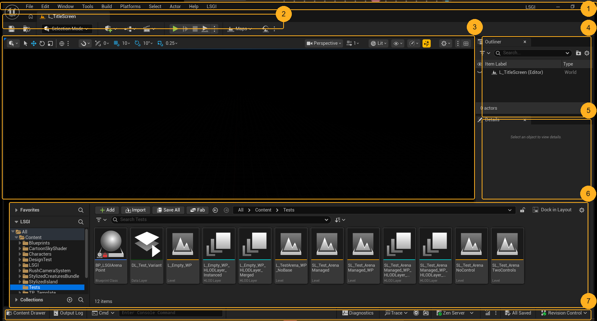
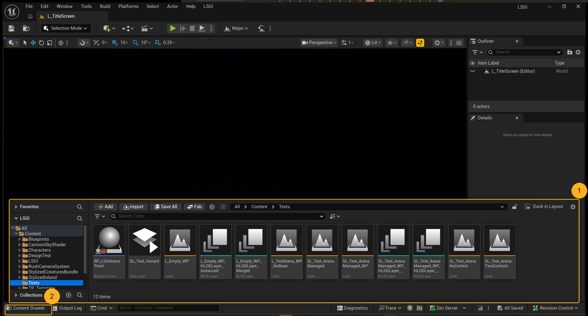
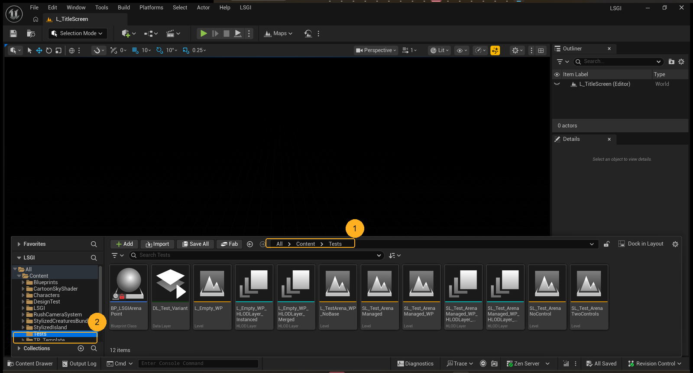

This is your own LSGI editor, captured from your screen today, not a stock screenshot. Read it once now and the battle loop stops being a hunt through menus.
The scope is deliberately narrow. This lesson is about where things are, not about how the combat system is designed. Every claim below is either visible in the picture or a property of the editor's layout. Anything about the battle loop itself waits for the next lesson, where the unreal agent and LSGI's own docs are the authority, not a screenshot.

Seven boxes, six jobs. The editor is a fixed arrangement: menu bar and toolbar across the top, the viewport in the middle, the Outliner and Details stacked on the right, the Content Drawer docking over the bottom, and one status strip underneath.
The names matter because every Unreal tutorial you will read uses them without explaining them. When someone writes "open the Details panel", this is the panel they mean.
You can point at the viewport, the Outliner, the Details panel and the Content Drawer without hunting for them.
Almost every "I cannot find it" in Unreal is one of these regions being closed, hidden behind another, or scrolled out of view. Knowing which region owns which job sends you to the right one instead of clicking through menus.

It is open in this capture. Notice what it covers: the lower half of the viewport. That is the deal a drawer makes. It gives the space back the moment you toggle it closed, which is why it is not a floating window you drag around.
Its two halves are also doing different jobs: the tree on the left is the folder hierarchy, the grid on the right is the assets inside the folder you have selected.
You can open and close the Content Drawer without moving any panel.
The single most common way to lose the asset browser is to look for a window called "Content Browser" in the title bar. There is a Content Browser, but the docked form is the drawer, and it is toggled from the bottom strip.

The breadcrumb across the top of the grid is the honest answer to "where does this live". Here it reads All > Content > Tests, so every asset in the grid is inside the project's Content/Tests folder.
The tree agrees: Tests is selected, under All > Content. And the assets are what you would expect to find there: test levels (L_TestArena_WP_*, L_Empty_WP_*), a data layer, and BP_LSGIArena.
You can state the content path of the arena test assets without opening a properties window.
An asset can be reached from the Content Drawer, a Reference, the Place Actors panel, or a Blueprint node that mentions it. Only one of those is the file's real home. Reading the breadcrumb means you can tell someone else, or yourself tomorrow, exactly where it lives: /Game/Tests.
Two habits, no screenshot needed, because both live in regions you have already seen:
- A panel disappeared. The Window menu in the menu bar lists every panel the editor can show. Open it there rather than restarting the editor.
- The asset browser disappeared. The Content Drawer button in the bottom strip brings it back.
- The console is one click away. Cmd in the bottom strip opens the console input, which is where commands like stat fps and console variables go. Most Unreal fixes you will read online are a console command.
- Are there unsaved changes? The bottom-right reads All Saved when the editor is holding nothing unsaved. When it changes, the editor is remembering work it has not written to disk.
You can recover a closed panel and open the console without restarting Unreal.
Losing the layout feels like losing the editor. It never is: every panel is one menu away, and the console you will use constantly is already docked at the bottom of your screen.